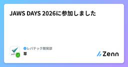

レバテック開発部のフィード
https://zenn.dev/p/levtech
レバテック開発部の公式テックブログです！
フィード

JAWS DAYS 2026に参加しました
レバテック開発部のフィード
JAWS DAYS 20262026-03-07に JAWS DAYS 2026に参加しました！AWSのユーザグループ、JAWSが池袋で年一でやっている一大イベントです。https://jawsdays2026.jaws-ug.jp/ 聴講した登壇聴講した登壇は以下です！以下、筆者の感想や解釈が入っているので、登壇内容と違っていたら教えてください！ [B3]200アカウント規模を見据えた開発・検証・本番の環境分離を成立させる、AWS Transit Gatewayによるネットワーク設計と実践Control Tower + AFT(Account Factory f...
6日前

Agent Skillsを行動評価する
レバテック開発部のフィード
はじめにこんにちは！だんです！Agent Skillsを導入してみたものの「これって本当にちゃんと動いているのか？」、レビュワーとしてレビューする時にも「何を基準に承認すれば良いのか？」と判断に迷ったことはないでしょうか。私たちのチームでは日々AIを活用しておりますが、この悩みを抱えていました。アウトプットを見て評価しようとしても、毎回結果が変わるAIに対して何を正解とすればいいのか、なかなか答えが出ません。この記事では、その問いに対して私が行き着いた考え方を共有します。 Agent SkillsとはAgent SkillsはAnthropicが策定したオープンスタンダ...
9日前
業務アプリのフロントエンド負債と向き合い、Tailwind CSS から Panda CSS への移行を決めた話
レバテック開発部のフィード
はじめにはじめまして。2025 年 10 月より、レバテック開発部にジョインした早川です。私たちのチームでは、社内業務を効率化するための Web アプリケーションを Next.js（App Router）+ TypeScript で開発しています。フロントエンドのスタイリングには Tailwind CSS を採用しており、プロジェクト開始から 1 年半が経過してコードベースは 200 ファイルを超える規模になっていました。私が入ったタイミングでは、すでにフロントエンドの技術選定に関わったメンバーは異動しており、デザイナーも不在。スタイルのルールが不明確なまま、画面数とコードが増...
9日前
TiDB Cloud 相乗り環境のコネクションプール枯渇問題
レバテック開発部のフィード
これはなにこんにちは！ レバテック開発部のもりたです。先日、AWS Aurora→TiDB Cloudへのデータベース移行プロジェクトを完了させました。弊開発部では数年前からマイクロサービスアーキテクチャを採用していたため、今回のプロジェクトでは各チームがそれぞれ運用していたMySQL Auroraを、TiDB Cloud上でひとつのTiDBクラスターに相乗りさせるという形になりました。TiDBという最新のツールを手に入れてやったぜ！！！ ...と思う一方で、ふと気になるのがコネクションプールの問題です。そこで今回は「ECS × TiDB Cloud相乗り環境におけるコネクシ...
16日前
「リスク管理と不確実性管理は別物」が急に分かった
レバテック開発部のフィード
これはなにこんにちは、レバテック開発部のもりたです。今日、唐突に「リスク管理と不確実性管理は別物だ」ということに納得がいきました。前々からプロジェクトマネジメントの文脈などでそういう言葉は聞いていつつも話半分に思っており、いや一緒でしょ...と思ってたんですが、いやこれほんまに別物です。今回は自分みたいに「いや一緒だが？？？」と思っている方に向けて、何が違うのか説明します。構成 構成以下の流れで説明します。一般的な定義管理方法の違い目的の違いまとめ リスク管理と不確実性管理は別物 一般的な定義さてここからリスク管理と不確実性管理の違いについて整理...
1ヶ月前
AI Agent Builders Meetup に参加しました
レバテック開発部のフィード
はじめに1/28(水)に、「AI Agent Builders Meetup」に参加しました。個人でとったメモを整理したものなので、間違っている箇所あれば、コメントにて教えてください！ Google ADKのサブエージェントをAgentic workflowに移行した話https://x.com/sonoda_mj/status/2016688991328968768?s=20サブエージェントにそれぞれドメインを持たせて、会話みたいなことをしていたが、サブエージェント（マルチエージェント）よりも、ワークフローの方がよかった話。AIがループに入らないよう、会話がちゃんと終...
2ヶ月前
TiDB Cloudのモニタリングはこんなふう！ TiDB Cloud Clinicを触ってみた感想
レバテック開発部のフィード
これはなにこんにちは、レバテック開発部のもりたです。最近、担当システムのデータベースがAWS AuroraからTiDB Cloudに切り替わりました。やったぜ！！🥳🥳🥳 とテンションが上がったのも束の間、スロークエリが頻発したりなんだか騒がしく......。こんな時、AWS AuroraではDatabase Insightなどのモニタリング/パフォーマンスツールがあったのですが、TiDBでどうやったらいいの〜〜！？！？！😭😭😭 ということで、調べてみました。また今回はTiDBへの移行を検討しているAWS Auroraユーザの方にもわかりやすいよう、Auroraのモニタリングツー...
2ヶ月前
TiDB移行、アプリケーションチームはどうする？
レバテック開発部のフィード
これはなにこんにちは、レバテック開発部のもりたです。先日、担当システムでのAWS Aurora→TiDB Cloud移行プロジェクトが完了しました。特に事故や不具合なく移行完了できたのですが、プロジェクト管理の観点で見たとき、なにをすれば良いのか分からず難儀する場面も多かったです。今回は自分のような人向けに、データベース移行プロジェクトでアプリケーションチームの人間が何をすればいいのか簡単にまとめていきたいと思います。構成 構成今回の構成は以下の通りプロジェクトの概要移行プロジェクトで実施すべき３つのタスク思い出深いものまず、どんなプロジェクトだったのか解説し...
2ヶ月前
PHP×Tokyo January 2026 に参加しました
レバテック開発部のフィード
はじめに1/17(土)に、「PHP×Tokyo January 2026」に参加しました。海外の方の参加も目立ち（全体の4割くらい？）、英語の発表もあり、直近のLaravelの海外からの波と熱を感じました。一方で、同時翻訳のWEBサービスがあり、英語でも聞きやすかったです。参加した感想や知見を書いていきます。 オープニング直近のトピックとして、以下3つが取り上げられた印象です。Laravel 2025 Advent Calendarhttps://laravel.com/adventClaude Code Pluginhttps://laravel...
2ヶ月前
「地に足ついた改善」を進めた1年でした
レバテック開発部のフィード
この記事は レバテック開発部 Advent Calendar 2025 最終日の記事です。 はじめにレバテック開発部の瀬尾です。基幹システムである営業支援システムを担当しています。この記事では、2025年のふりかえりとして エンジニアとして考え方がどう変わったか を書いてみようと思います。タイトルにある通り、一言でまとめると「地に足ついた改善」を意識できるようになった1年でした。 地に足をつけるとは自分のいう「地に足をつける」とは理想を捨てないことでも、一気にそこへ行こうとしないことということです。システム改善やリファクタリングの話になると、中途半端な改...
3ヶ月前
Self-hosted runnerでWordPressデプロイを爆速にした話
レバテック開発部のフィード
こんにちは、レバテック開発部の小豆畑です。この記事は レバテック開発部 Advent Calendar 2025 24日目の記事です。 はじめに私はレバテックのオウンドメディアの運用チームに所属しています。この記事のテーマは昨年リニューアルしたこちらのコーポレートサイトです。レバテックのコーポレートサイトかっこいいでしょう。なんと、WordPressで動いています。この記事では、サイト更新時のデプロイ方法を手動ファイルアップロードからGitHub ActionsのSelf-hosted runnerを使った仕組みに変えた事例をご紹介します。 これまでの課題 手動...
3ヶ月前
レバテックのデザインシステム「VoLT」におけるクオリティゲートの話
レバテック開発部のフィード
レバテック デザインシステム「VoLT」におけるクオリティゲートの話こんにちは、レバテック開発部のHYです。この記事は「レバテック開発部 Advent Calendar 2025」の 23 日目の記事です！毎年この時期になるとこうしてアドベントカレンダーで記事を書いていますが、もっと書いていきたいですねw はじめにレバテックでは、各サービスの開発チーム向けに React と Vue で利用できる共通 UI コンポーネントライブラリ（デザインシステム「VoLT」）を提供しています。この記事では、VoLT の品質を担保するために導入した自動化テストカバレッジゲートを起点とし...
3ヶ月前
LESSコマンドの前処理はいつ設定される?
レバテック開発部のフィード
この記事は レバテック開発部 Advent Calendar 2025 22日目の記事です。 結論bashかつUbuntu環境では、/etc/skel/.bashrcに記載された[ -x /usr/bin/lesspipe ] && eval "$(SHELL=/bin/sh lesspipe)"によってデフォルトの前処理が設定される。 lessコマンドhttps://packages.debian.org/ja/sid/less一度に画面全体 にテキストを表示できるメモリ効率の良いユーティリティです。less には基本的な ページャ "more" より...
3ヶ月前
リファクタリングは「文化的雪かき」なのかもしれない。~ 100日間継続した小さなPRの積み重ね~
レバテック開発部のフィード
この記事は「レバテック開発部 Advent Calendar 2025」の21日目の記事です！🎄 はじめにこんにちは、レバテック開発部のk氏です。みなさん、日々のソフトウェア開発でリファクタリングは実施できていますか？日々の業務と並行してリファクタリングを実施することは、容易なことではないと思っています。（チームの状況だったり、組織的な問題が絡んできたりもあると思います。）そこで、この記事では今年の春から私が取り組んだ、リファクタリングのアプローチ方法を振り返りながら紹介します。みなさんのソフトウェア開発の中で活用できそうなことがあれば幸いです。!この記事は以下のような...
3ヶ月前
継続率100%！毎月開催のLT会を1年運営してわかった社内LT会のコツ
レバテック開発部のフィード
はじめにこんにちは！レバテック開発部の宮下です。この記事は レバテック開発部 Advent Calendar 2025 20日目の記事です。勉強会やLT会の継続って難しいですよね。廃れていったり元気がなくなっていく勉強会を何百回も見たことがあります...。本記事では、自分が1年間社内LT会の運営に携わる中で、継続率100%（毎月開催）を実現するために実践したノウハウを公開します。 対象読者これから社内LT会を立ち上げたいと考えている方現在運営しているLT会の登壇者集めや継続に悩んでいる方社内でのアウトプット文化を醸成したいマネージャー層の方 LT会を継続させる...
3ヶ月前
モノレポにおけるCLAUDE.mdの配置場所
レバテック開発部のフィード
この記事は レバテック開発部 Advent Calendar 2025 19日目の記事です。 はじめにこんにちは、だんです。Claude Codeを使い始めてもう半年ほど経過しますが、まだまだ知らないことが多くあります。（というより進化が速すぎてついていけない）Claude Code をモノレポで使うとき、「CLAUDE.md をどこに置くべきか？」と悩みました。上記の悩みをもとに、今回は次の2つを調査・検討しました。CLAUDE.mdの参照の仕組みモノレポにおけるCLAUDE.mdの配置場所!本記事執筆後にClaude Codeで.claude/rules/が...
3ヶ月前
Chrome のページプリロード機能 ✕ Next.js で詰まった話
レバテック開発部のフィード
はじめにこんにちは、レバテック開発部の塚原です。この記事は レバテック開発部 Advent Calendar 2025 18日目の記事です。この記事では Web サービスの開発業務で遭遇したある事象について説明をします。 前提遭遇した事象の説明をするにあたり、前提となる Web サービスの実装について説明します。私のチームで開発している Web サービスでは、Next.js のミドルウェアで認証処理を実行し、認証が失敗した場合は、認証エラーを示すページにリダイレクトさせています。そして、ミドルウェアを通過後にページがサーバーサイドでレンダリングされる時に、バックエンドの...
3ヶ月前
見えないコストを可視化する：AWS Config Custom Rules × Lambda 実装ガイド
レバテック開発部のフィード
この記事は レバテック開発部 Advent Calendar 2025 17日目の記事です。 はじめにSREチーム業務委託の丹羽です。「コストは常に意識していてくれたらな...！」開発チームに対して常々そう思ってはいるものの、開発に専念すべきフェーズのチームが、日常的にコスト管理画面と睨めっこしなければいけない状況は健全ではありません。かといって、野放図にリソースが増えれば、不要なコストが積み重なってしまいます。そこで今回は、コスト管理の一環として、「集計のフックとなるタグ（BusinessUnitやServiceなど）が正しく付与されているか」 を機械的に検知する仕組みを...
3ヶ月前
本番稼働していて負荷をかけられないTiDBへの追加移行におけるAWS DMSのチューニングTips集
レバテック開発部のフィード
この記事は レバテック開発部 Advent Calendar 2025 16日目の記事です。 はじめにレバテック開発部、SREチームに所属している金澤です。現在、レバテックではTiDBをマルチテナントで利用しています。元々はAurora MySQLをメインで使用しており、移行にはAWS DMSを採用しました。今回は、TiDB移行におけるAWS DMSを利用する事例が少なかったこともあり、工夫した点をまとめたいと思います！↓TiDBに関連する過去の記事https://zenn.dev/levtech/articles/switch-table-name-on-tidbht...
3ヶ月前
レバテックのTiDBにTiProxyを導入するまでにやったこと
レバテック開発部のフィード
はじめにこの記事は レバテック開発部 Advent Calendar 2025 15日目の記事です。レバテックSREチームの鈴木です。現在、レバテックの本番環境では TiDB Cloud Dedicated Cluster を利用していますが、運用上の課題として「TiDBノードのメンテナンス（再起動やスケーリング）時に発生する接続断」がありました。特にOLTPワークロードにおいては、この瞬断がトランザクションエラーを引き起こし、アプリケーション側の可用性に影響します。この課題を解決するために、TiDBのプロキシコンポーネントである TiProxy の導入を行いました。本記...
3ヶ月前